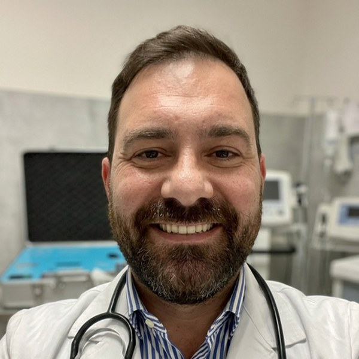

L'infiammazione cronica è il motore silenzioso del dolore persistente e della degenerazione di dischi, cartilagini e tendini. L'ossigeno-ozono terapia agisce alla radice di questo processo, con un profilo di sicurezza elevato e senza gli effetti collaterali tipici delle terapie farmacologiche prolungate.
L'infiammazione è, in origine, un meccanismo di difesa: serve a isolare un danno e ad avviare la riparazione. Il problema nasce quando non si spegne. L'infiammazione cronica di basso grado resta attiva per mesi o anni, mantiene i tessuti in uno stato di allerta permanente e produce due conseguenze: il dolore che non passa e la degenerazione progressiva delle strutture articolari.
Sul piano molecolare l'infiammazione persistente è sostenuta da NF-κB, il principale fattore di trascrizione pro-infiammatorio, che stimola la produzione di citochine (TNF-α, IL-1β, IL-6) e di radicali liberi. Questo ambiente ossidativo danneggia le cellule, sensibilizza le terminazioni nervose e accelera l'usura dei tessuti.
Curare il dolore significa quindi intervenire su questo circolo vizioso — non limitarsi a mascherare il sintomo — privilegiando terapie efficaci e ben tollerate, che non richiedano l'uso prolungato di antinfiammatori con i loro effetti su stomaco, rene e apparato cardiovascolare.
Prenota una valutazioneL'ozono medicale attiva la via antiossidante Nrf2, che a sua volta frena NF-κB, l'interruttore molecolare dell'infiammazione.
Riduzione documentata delle citochine pro-infiammatorie e degli indici di stress ossidativo nelle malattie infiammatorie croniche.
Negli studi clinici sull'ozonoterapia infiltrativa l'incidenza di effetti collaterali è molto bassa e gli eventi descritti sono lievi e transitori.
Come l'infiammazione cronica trasforma un fastidio passeggero in una patologia degenerativa.
I processi degenerativi osteoarticolari — artrosi, degenerazione discale, tendinopatie croniche — non sono semplicemente il risultato dell'età o dell'usura meccanica. Sono processi biologicamente attivi, in cui l'infiammazione ha un ruolo centrale nel mantenere e accelerare il danno.
Il disco intervertebrale è una struttura poco vascolarizzata, che si nutre per diffusione. Quando si fissura o protrude, il materiale del nucleo polposo entra in contatto con il sistema immunitario e innesca una reazione infiammatoria intensa. Sono le citochine infiammatorie, più ancora della semplice compressione meccanica, a irritare la radice nervosa e a generare il dolore della sciatalgia e della lombalgia. Ridurre l'infiammazione locale significa quindi agire sulla causa reale del dolore.
Nell'artrosi di ginocchio, anca o spalla, la cartilagine si assottiglia progressivamente. Il processo è alimentato da enzimi (metalloproteasi) attivati proprio dalle citochine infiammatorie: più infiammazione significa più degradazione della matrice cartilaginea, che a sua volta libera frammenti che alimentano ulteriore infiammazione. Un circolo che si autosostiene.
Nelle tendinopatie (spalla, gomito, tendine d'Achille) il tessuto tendineo perde la sua organizzazione ordinata e viene sostituito da tessuto disorganizzato e poco resistente. Anche qui l'ambiente ossidativo e infiammatorio ostacola la riparazione fisiologica del tendine.
Il denominatore comune è lo squilibrio redox: un eccesso di radicali liberi rispetto alle difese antiossidanti della cellula. Questo squilibrio è oggi riconosciuto come uno dei meccanismi fondamentali dell'invecchiamento tissutale. Agire su di esso significa non solo ridurre il dolore, ma sostenere la capacità riparativa dei tessuti nel tempo.
Una risposta mirata all'infiammazione e allo stress ossidativo, con elevata tollerabilità.
L'ossigeno-ozono terapia utilizza una miscela di ossigeno (O₂) e ozono (O₃) in concentrazioni controllate e a scopo terapeutico. L'ozono medicale non esiste in bombola: viene prodotto al momento con apparecchiature dedicate e dosato con precisione dal medico in base alla patologia e al distretto trattato.
Il meccanismo si fonda su un principio apparentemente paradossale, il precondizionamento ossidativo: quantità controllate di ozono generano uno stimolo ossidativo lieve e transitorio che "allena" la cellula ad attivare i propri sistemi di difesa. Si attiva la via Nrf2, aumentano gli enzimi antiossidanti endogeni (superossido dismutasi, catalasi, glutatione perossidasi) e viene contemporaneamente frenato NF-κB, con conseguente riduzione delle citochine infiammatorie.
A questo si aggiunge un miglioramento dell'ossigenazione tissutale, particolarmente rilevante in strutture poco vascolarizzate come il disco intervertebrale e i tendini, dove l'ipossia contribuisce a mantenere il processo degenerativo.
Modula i mediatori dell'infiammazione, attiva la via Nrf2 e riduce l'espressione delle citochine pro-infiammatorie responsabili del dolore persistente.
Riduce la sensibilizzazione delle terminazioni nervose e il dolore, con evidenze particolarmente solide nel dolore lombare da ernia del disco.
Potenzia le difese antiossidanti endogene, sostenendo l'equilibrio redox alla base dei processi di invecchiamento e degenerazione dei tessuti.
Condizioni infiammatorie e degenerative che possono beneficiare della terapia del dolore e dell'ossigeno-ozono terapia.
Un percorso chiaro, personalizzato e monitorato nel tempo.
Valutazione clinica completa, analisi della storia del dolore ed esame degli esami strumentali già eseguiti.
Definizione del trattamento più adatto, del numero di sedute previste e degli obiettivi realistici da raggiungere.
Sedute ambulatoriali di breve durata, generalmente ben tollerate, con ripresa immediata delle normali attività.
Rivalutazione dei risultati, indicazioni per il mantenimento e prevenzione delle recidive.
Riferimenti peer-reviewed sugli effetti antinfiammatorio, antinocicettivo e antiossidante dell'ozono medicale.
⚕️ Nota informativa. I contenuti di questa pagina hanno finalità divulgativa e informativa e non sostituiscono la visita medica né un consulto specialistico. L'indicazione a qualsiasi trattamento va sempre valutata dal medico caso per caso. I risultati possono variare da paziente a paziente.

Medico anestesista-rianimatore, mi occupo di terapia del dolore e di ossigeno-ozono terapia. Il mio approccio nasce dalla convinzione che curare significhi prendersi cura della persona nella sua interezza, non soltanto trattare un sintomo isolato.
L'esperienza in anestesia e rianimazione mi ha insegnato a leggere il dolore come un fenomeno complesso, con una precisa base biologica. Per questo, davanti a un dolore che non passa, il primo obiettivo è capire quale processo — quasi sempre infiammatorio — lo stia alimentando, e intervenire su quello.
Per ogni paziente costruisco un percorso su misura, che parte da un inquadramento clinico accurato e privilegia trattamenti conservativi e mini-invasivi, con l'obiettivo di ridurre il dolore e restituire qualità alla vita quotidiana.
Scegli comodamente data e orario tramite MioDottore, oppure contattami telefonicamente per qualsiasi informazione.
📅 Prenota su MioDottore Verrai reindirizzato al modulo di prenotazione ufficiale.Ambulatorio di terapia del dolore e ossigeno-ozono terapia a Segrate, alle porte di Milano.